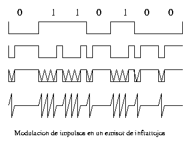
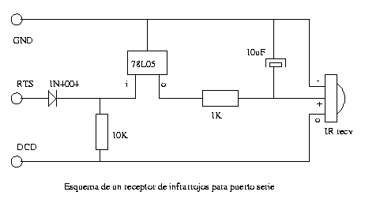
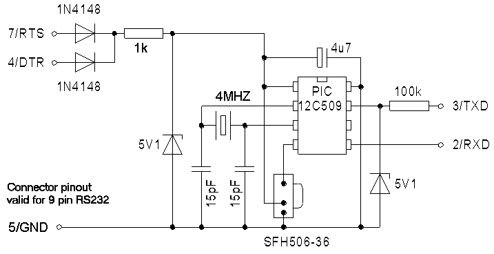
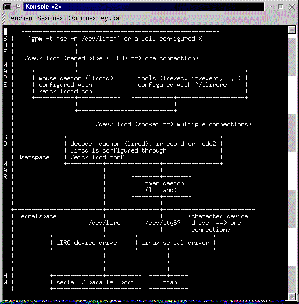
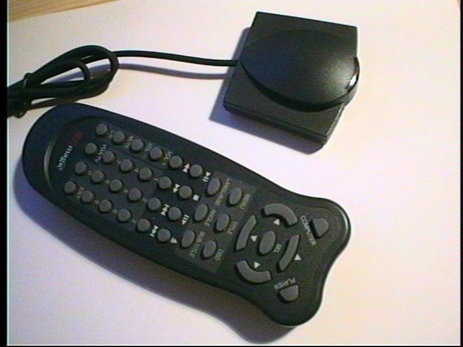

El soporte de Infrarrojos en Linux (I)
****** Título: El Soporte de Infrarrojos en Linux (I)
****** Autor: Juan Antonio Martínez <jantonio@dit.upm.es>
Entradilla:
Iniciamos en este número de Linux Actual, una serie dedicada al uso y configuración de dispositivos de infrarrojos en Linux. En este número analizaremos el soporte para sistemas de control remoto
Presentación:
Para los usuarios de ordenadores portátiles, son comunes los periféricos que utilizan dispositivos de comunicación por infrarrojos. Iniciamos con este artículo una serie donde se describen los diversos métodos de utilización de esta tecnología en nuestro sistema operativo favorito. En este número analizaremos el soporte para control remoto y mandos a distancia; en el próximo número de Linux Actual describiremos el soporte para el standard IrDA de comunicación por infrarrojos
Introducción:
Los usuarios de ordenadores portátiles conocemos bien el hecho de que nuestro equipo siempre debe ir acompañado de una bolsa conteniendo cables, fuente de alimentación, periféricos diversos, etc. Conscientes de ello, los fabricantes de hardware han elaborado una serie de estándares y protocolos para la comunicación inalámbrica mediande dispositivos infrarrojos. Es el conocido standard IrDA ( siglas de InfraRed Data Association ). Linux soporta plenamente dicho estandard, permitiendo la conexión con otros ordenadores, impresoras, teléfonos móviles, etc.
|
IrDA es un standard para la conexión de equipos informáticos mediante dispositivos infrarrojos |
Por otro lado existen en el domicilio multitud de aparatos que van acompañados de su correspondiente control remoto. El usuario suele buscar la posibilidad de un control remoto único para todos los equipos, en lugar de tener que usar el adecuado para cada equipo. Por supuesto se plantea la posibilidad de controlar los equipos desde el ordenador, simulando el control remoto, y al contrario ¿ por qué no controlar el ordenador desde un control remoto ?. Esta opción no tiene por qué parecer extraña: la mayor parte de las tarjetas de televisión para ordenadores, vienen acompañada de su correspondiente mando a distancia. Nada nos impide utilizar dicho mando para algo más que cambiar de canal.
Como ejemplo práctico, el autor de este artículo ha desarrollado un programa para utilizar un control remoto de un DVD como ratón inalambrico, con el que realiza las presentaciones en diversas conferencias y charlas.
|
Con Linux podemos utilizar y simular controles remotos de diversos electrodomésticos |
En este artículo se describe la instalación, configuración y uso de dispositivos de control remoto bajo Linux. En el siguiente número de la serie, describiremos en detalle la implementación del protocolo IrDA en Linux, y describiremos en detalle como utilizar sus potencialidades.
Diseño y construcción de un receptor de infrarrojos para el PC
Es común, al oir la expresión "puerto de infrarrojos" pensar que todos los dispositivos de este tipo son compatibles entre sí. Es más, en el mercado doméstico, el usuario encuentra los denominados "control remoto universal", que en teoría permite simular el comportamiento de cualquier otro control remoto... Del mismo modo, se puede llegar a pensar que si nuestro ordenador dispone de un puerto IrDA, podría recibir datos de un control remoto. Nada más lejos de la realidad.
|
No todos los receptores de infrarrojos son compatibles entre sí |
La comunicación por infrarrojos se basa en transmitir mediante un diodo emisor una señal de una frecuencia dada ( por lo general en la banda de 35-40Khz ) una señal digital modulada , tal y como se muestra en la figura 1. El receptor consiste en un fotoreceptor y un demodulador que recibe un pulso modulado a la frecuencia del emisor y lo demodula a la señal digital original. El hecho de modular la señal evita las interferencias con otras fuentes emisoras de señal que pudieran enmascarar la señal original. El protocolo IrDA, es mucho más elaborado: existen frecuencias de sincronización, códigos de crc, detección de errores, etc. Por ello un receptor IrDA es incompatible con los mandos a distancia que encontramos en casa.
|  |
| Figura 1:Codificación y Modulación de la señal |
|---|
Por ello, antes de empezar a trabajar con un mando a distancia, es preciso disponer de un hardware que haga las veces de receptor. Existen diversas soluciones:
Utilizar dispositivos preparados expresamente para PC: mandos de DVD, control remoto de tarjetas de TV, ratones inalambricos, etc
Hacerse uno mísmo el receptor. Para ello deberemos conocer la frecuencia de modulación del emisor.
Comprar un receptor universal. Existe un producto "irman" comercializado en Internet, que consta de un emisor/receptor universal de infrarrojos, a un precio aproximado de 40 dólares, y que incluye un API y una biblioteca de desarrollo para linux
Lo normal será utilizar un mando a distancia cuyo receptor esté adaptado al PC. En el caso de que queramos hacernos nosotros mismos el receptor, podemos, si no conocemos la frecuencia de modulación, acudir a una tienda de reparaciones a por el módulo receptor, del cual extraeremos el diodo receptor. En el tercer caso, si no queremos comprar el equipo, podemos incluso fabricarnoslo nosotros mismos a condición de que poseamos herramientas para programar microcontroladores.
|
El lector puede construírse su propio receptor de infrarrojos |
La figura 2 muestra los esquemas eléctricos de un receptor de infrarrojos para PC. La figura 3 muestra el esquema del emisor/receptor "IrMan". Estos dispositivos se enchufan al puerto serie de nuestro PC.
|  |
| Figura 2:Esquema eléctrico de un receptor casero |
|---|
|  |
| Figura 3: Esquema eléctrico del receptor IrMan |
|---|
Lo primero que llama la atención es que el receptor "casero" no utiliza la línea de entrada de datos del puerto serie. La razón es sencilla: un mando a distancia no transmite bytes, sino una secuencia de pulsos de duración determinada en función del código. Es lo que denominamos "modulación por duración de pulso", o PDM. Es preciso pues disponer de un driver en el núcleo Linux que sea capaz de medir dichos pulsos, y traducirlos a datos entendibles por el ordenador, y por los programas que se desarrollen. El receptor IrMan, incluye un microcontrolador que realiza la demodulación PDM. Por ello puede utilizar las líneas estandard de emisión y recepción del puerto serie. El hecho de utilizar la linea DCD nos permite pues utilizar el sistema de interrupciones del puerto serie para controlar los tiempos de activación y desactivación de señal en el puerto.
El paquete LIRC ( Linux Infrared Remote Control )
LIRC es un proyecto de desarrollo de programas de gestión de diversos mandos a distancia desde linux. Consta de las siguientes aplicaciones:
Un driver que se enlaza con el núcleo Linux, y que controla el puerto serie
Un demonio de gestión que traduce las secuencias de bytes generadas por el driver a códigos de teclas y funciones
Un programa para recibir "en crudo" secuencias desde el mando a distancia, y mapearlas a códigos, elaborando el "mapa" del mando a distancia
Diversas utilidades, como un emulador de ratón
Una colección de mapas de decodificación precompilados, que abarca multitud de marcas y modelos de mandos a distancia
Una librería de compatibilidad con los receptores IrMan
La figura 4 nos ilustra las dependencias de las diversas aplicaciones de las que consta LIRC. Podemos ver que existen una serie de dispositivos, que deberemos crear con "mknod". El manual está profusamente documentado, e indica los diversos procedimientos a seguir. Especial mención merece el de la creación del fichero de configuración.
|  |
| Figura 4: diagrama funcional de la aplicación LIRC |
|---|
Una vez configurado y compilado el paquete, lo primero que haremos será crear el dispositivo especiale /dev/lirc y las fifos /dev/lircd y /dev/lircm La segunda fase del proceso consite en la elaboración del mapa de codificación de nuestro mando a distancia ( en el caso de que no esté ya incluído en la lista ). para ello utilizaremos el programa ofrecido a tal efecto por la aplicación.
|
Con LIRC podemos simular, desde el mando a distancia, pulsaciones de teclas, movimientos de ratón, etc. |
Un detalle del fichero de configuración es que podemos hacer que el mando a distancia se comporte de una forma o de otra en función de la aplicación: El programa "irxevent" genera eventos de X enviandolos a la aplicación, como si de una tecla o movimiento de ratón se tratara. En función de la ventana activa se puede codificar el evento deseado. Otro programa, "lircmd" emula un ratón MouseSystems a través de la fifo /dev/lircm. De esta manera podemos substituir el ratón del servidor X por el mando a distancia, o bien hacerlo funcionar en paralelo, utilizando para ello las X Input Extensions, tal y como se explica en la documentación
Otros dispositivos de control remoto.
Puede ser que el lector se encuentre con que disponga de un par emisor-receptor de infrarrojos para PC ( por ejemplo, el mando a distancia de la tarjeta de televisión", y que dicho
conjunto no sea compatible con las especificaciones hardware de IrMan o de LIRC. No es problema: en el CD-Rom que acompaña a esta revista se incluye un programa "xremote", desarrollado por el autor y que cubre todas las funcionalidades de LIRC, salvo que no utiliza drivers en el núcleo, sino que lee el puerto serie normalmente. En cualquier caso siempre es necesario el mapeado de códigos del mando a distancia a eventos de tecla o de ratón, por lo que será necesario disponer de algún sistema de captura de datos. El autor decodificó las señales de su mando a distancia mediante el programa "minicom", y almacenando en un fichero las diversas secuencias de bytes recibidas. La foto de la figura 5 muestra el conjunto emisor-receptor utilizado
|  |
| Figura 5: Conjunto emisor-receptor de infrarrojos |
|---|
Resolución de problemas:
- El problema más habitual es la ausencia de señal a la entrada del receptor. Esto puede ser debido a dos motivos:
La frecuencia del demodulador no está apareada con la del emisor
No está activado el puerto. Recuerdese que el receptor se alimenta a través de la señal "Request To Send" (RTS), y que el puerto debe estar activo y configurado para flujo de datos hardware. En caso contrario, ni el receptor estará habilitado, ni seremos capaces de detectar cambios de nivel en la señal DCD ("Data Carrier Detect")
-Otro problema común surge con el programa lircmd, el demonio de emulación de ratón. Observando detenidamente el código fuente y comparándolo con el conocido programa "gpm" vemos que la implementación del protocolo "MouseSystems" no es correcta. Los usuarios que vayan a utilizar esta aplicación deberían ver el código de "xremote" para ver la correcta implementación
|
El entorno X-Window nos permite añadir ratones adicionales mediante las X-Input Extensions |
-El programa "irxevent" no siempre produce los resultados deseados: La generación y envío de eventos a una aplicación puede estar bloqueada tanto por el window manager como por la aplicación en sí. En función de la ventana, de la aplicación y del gestor de ventanas, es posible que algunos eventos sean rechazados, admitiendose solo los generados por el ratón y por el teclado. Por ello la aplicación "xremote" permite al usuario escoger la modalidad de funcionamiento: por eventos, o por emulación de ratón por puerto auxiliar
Resumen. Conclusiones
Hemos visto en este artículo como es posible utilizar controles remotos y mandos a distancia con nuestro sistema operativo favorito. Del mismo modo se ha analizado el funcionamiendo de estos accesorios e incluso dado pistas para la fabricación de receptores hechos por nosotros mismos.
Por otro lado se ha descrito el programa "LIRC", su estructura y funcionamiento, y visto como se puede generalizar este programa en aquellos receptores que no cumplen las especificaciones de LIRC.
En cualquier caso el control remoto y adaptación de mandos a distancia al equipo no es sino la punta del iceberg del sistema de infrarrojos de linux. Dedicaremos el próximo artículo de la serie a explicar el estandard IrDA, su implementación en Linux, y su configuración y aplicaciones. IrDA constituye un verdadero estandard, independiente del sistema, bi-direccional y que permite conectar multitud de equipos, desde impresoras hasta teléfonos móviles. A este respecto la implementación IrDA de Linux es muchisimo más completa y funcional que la ofrecida para otros sistemas operativos.
Referencias
En el CD-Rom se incluye la aplicación "xremote", el paquete LIRC, la librería de gestión de dispositivos IrMan ( libirman ) y diversa documentación, entre la que se incluyen diversos esquemas de circuitos, y el manual técnico de diversos dispositivos receptores de infrarrojos.
Otras referencias son:
-InfraRed HOWTO
-The Linux Infrared Remote Controler Home Page http://fsinfo.cs.uni-sb.de/~columbus/lirc/
-Documentos de la Infrared Data Association (IrDA)